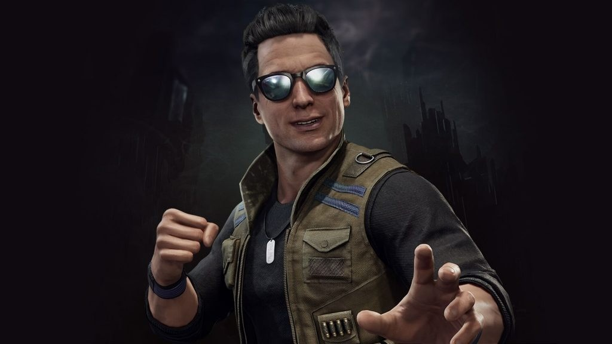
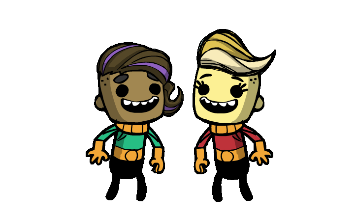
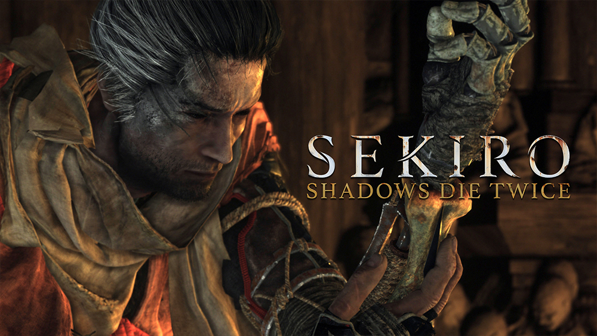
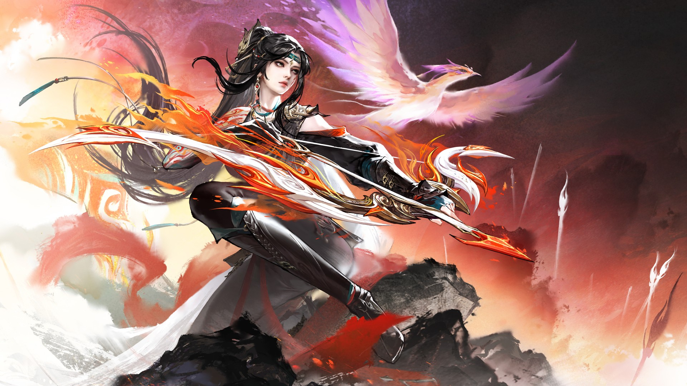

类型： 格斗 / 动作 / 血腥竞技
《真人快打11》是真人快打系列的第11款格斗游戏，也是第22部作品，由NetherRealm Studios、QLOC和Shiver开发，华纳兄弟互动娱乐发行。该游戏于2019年4月23日通过Steam在PlayStation 4、Xbox One、Nintendo Switch和Microsoft Windows平台发布。
作为《真人快打X》的续作，讲述了年轻的雷电和刘康以及穿越现在和过去时间线的战斗者们，试图阻止时间守护者克罗妮卡的企图，克罗妮卡计划因雷电现今版本的行为而重新开始时间线。在后续资料片《余波》中，风神、夜狼和尚宗被送往这条改变时间线的过去，以保存一件用来拯救时间线免于彻底毁灭的神器。
《余波》扩展包于2020年5月26日发布。该资料片包含额外剧情模式、三名新角色、新关卡，以及关卡致命一击和友谊终结技的回归。更新版《真人快打11：终极版》于2020年11月17日发布。该版本除了所有可下载内容外，还包含了主游戏，并为Xbox Series X和PlayStation 5提供了增强的4K体验。
续作《真人快打1》于2023年9月19日发布。
刚开始接触《真人快打 11》时，我完全摸不着头脑，招式怎么都搓不出来，硬着头皮练了一小时，还是觉得操作门槛太高，只能暂时弃坑。
时隔 15 天，我入手了 Xbox 手柄，手感瞬间顺畅不少，便重新打开游戏。一开始试玩刘康，后来又换了蝎子和小丑，可每个角色都玩不明白，连招总是断档，一度陷入迷茫。直到刷到视频，被乔尼・凯奇帅气的墨镜连招狠狠吸引，下定决心苦练这个角色。经过反复练习，我终于熟练掌握这套连招，还能在实战里完整打出来，那种成就感特别强烈。
这款游戏最吸引我的，就是极具冲击力的Brutality与Fatality终结技。画面虽然血腥暴力，却带来极致的刺激感，也是我最初关注这款游戏的原因。当然，轻松搞笑的友谊终结也让血腥的对决多了几分趣味，反差感拉满。
除了紧张刺激的天梯实战，游戏还有高塔闯关、剧情模式、掘墓探险等丰富的 PVE 内容，不管是想硬核对战，还是休闲刷内容，都能找到乐趣。从新手碰壁到熟练操控凯奇打出连招，这款游戏给了我满满的成长与快乐。
⭐⭐⭐⭐

类型： 独立 / 模拟 / 经营
《缺氧》（英文名：Oxygen Not Included），是Klei Entertainment制作发行的一款模拟策略游戏，于2017年5月18日以抢先体验版本的形式登陆PC端Steam平台，2019年7月31日发行正式版。
《缺氧》是一款太空殖民地模拟游戏，玩家需要管理居民，帮助他们挖掘、建立和维护一个地下小行星基地，玩家需要水、食物、氧气、适当地调节压力和适宜的温度来维持他们活着并满足他们。
2020年，《缺氧》获得DICE游戏大奖奖项“年度策略/模拟游戏”提名。
非常值得游玩的一款游戏，在游戏中你需要搭建和现实中一样的生存环境，从最基础的生存设施开始建设，逐步挖掘开拓空间，研发新式工具来开拓你的星球。
这款游戏中的电力、水管等设施的设定合乎逻辑，复制人也有各种性格和擅长的技能，拥有无限的开发潜力。
⭐⭐⭐⭐⭐

类型： 动作冒险RPG
《只狼：影逝二度》（Sekiro: Shadows Die Twice）是一款由From Software制作，Activision发行的动作角色扮演游戏。游戏于2019年3月22日在全球同步上市，发行平台包括PC、PS4、XboxOne。
《只狼：影逝二度》的故事发生在十六世纪末的日本战国时代，玩家将扮演一名忍者角色，为自己的领主执行任务，见证一个不断流血的世界。游戏以剑为战斗核心，然后通过各种道具与假肢手臂增强战斗。
TGA2019盛典上，《只狼：影逝二度》获得了年度最佳游戏，同时该游戏也是年度最佳动作冒险游戏。
该游戏最低配置要求包括，系统为Windows 7、8、10(游戏仅支持64位)，CPU为Intel Core i3-2100、AMD FX-6300，内存需要4GB，硬盘需要25GB可用空间，显卡为NVIDIA GeForce GTX 760、AMD Radeon HD 7950，DX版本为DirectX 11.0
这款游戏是我第一个接触的魂游。在我玩这款游戏的过程中我认为在战斗前，对于未发现玩家的敌人，玩家可以直接进行忍杀（暗杀）。 对于多血条的敌人，一次忍杀可以消耗掉一管血条。
还有其独特的架势条设定，只要对手的架势条满了，你就可以直接处决消耗掉一管血条
而且游戏自由度高可以尽情探索，故事背景也很可以，玩家可以回到十年前和boss对抗，还有就是能够跳跃，跳跃能够躲避对手的下段危。
《只狼》搭建了完善且逻辑自洽的基础战斗系统，在此之上，将 忍义手 、道具、技能等多个系统进行横向整合。 各系统既相互独立，又彼此关联，极大地丰富了玩家的战术选择。 例如，玩家可利用忍义手的各类工具，配合技能和道具，应对不同场景和敌人，显著拓宽了游戏玩法的多样性
⭐⭐⭐⭐

类型： 多人 / 动作竞技
《永劫无间》（Naraka：Bladepoint）是由24 Entertainment开发，网易游戏于2021年7月8日发行在steam平台的高自由度多人动作竞技游戏。
《永劫无间》其背景设定在中国古代，拥有多个游戏模式，并且拥有不含格挡键的独特防御机制，每一个角色都会有自己与众不同的技能设定。在域外之地聚窟州，神秘的力量等待着来自各大文明的武者。玩家需要运用丰富的武器战胜敌人，而世界的真相将向最终的胜者展开。《永劫无间》官方宣布全球销量突破600万，创下国产买断制游戏销量新纪录。
推荐配置分别是操作系统为Windows 10 64位；处理器为Intel i7 7代；内存需要16 GB RAM；显卡需要 NVIDIA GeForce GTX 1060 6G；DirectX 版本为11；存储空间需要 20 GB 可用空间
2022年夏天高考结束后，我拥有了人生中第一台属于我的电脑。拿到电脑后，我第一件事就是去STEAM商城中花99元购买了《永劫无间》，那个夏天我一直在玩永劫无间，因为我第一次接触到了这种武侠竞技类大逃杀游戏。
我和我的朋友们组成了三人团队，在三排中开始了属于我的旅程。刚开始我一窍不通不会振刀也不会蓄力，只是1、2、3，一直出着所谓的民工三连。那时我的刀被振掉了，也不知道为什么，问了朋友之后才明白可以用鼠标双键组合振掉蓝霸体的武器。
当时真的是什么也不懂，就靠着朋友带我玩。我也惊羡于那些高手的操作，我不想再躲在隐身草里苟分，于是我就开始看教学，在训练场里一遍遍的练习，终于我的技术得到了提升，段位也水涨船高。
在三排的过程中需要不断提升自己的意识和操作才能成为天选之人，在此过程中我也和朋友们有过争吵，最终不欢而散。当初最开始和我一起玩的朋友们也去玩其他游戏了，我开始了野排。野排可以遇到各色的队友，也让我见到了江湖的百态。
最后，我想说朋友才是游戏的最高配置，玩游戏开心才是最重要的，不要被那所谓的技术迷惑了双眼。
《永劫无间》我玩了3136.7个小时，是我玩的最久的游戏。我未来还是会一直玩下去，在这里我可以结实到很多的朋友，蓬莱岛也是很有趣的地方，我希望我会一直玩永劫无间，希望永劫无间也能一直很好的发展下去。
⭐⭐⭐⭐⭐